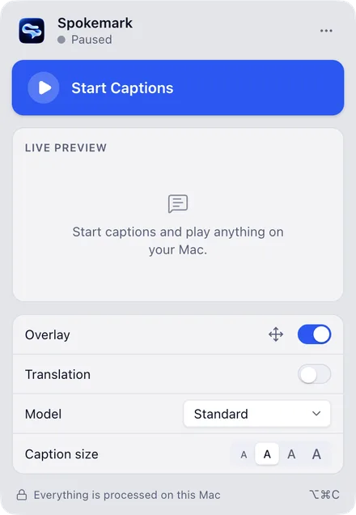

Captions over everything
An overlay above every app and Space. Clicks pass through it; drag and resize it in edit mode.
See all featuresLive captions for everything your Mac plays. Calls, videos and podcasts, transcribed on your Mac's GPU. Free, open source, 100% on-device.
jfk.wav00:00
provisional
And so my fellow Americans!
Ask not!
What your country can do for you? Ask what you can do for your country
The panel replays real output: Spokemark captioning jfk.wav, a public-domain recording, at its real timing. Raw log: docs/landing/demo-jfk.log in the repository.
What it doesin one sentence
Spokemark listens to your Mac's sound output and writes what's said on screen as it's said, with a Whisper model on your GPU, not a server.
No bot joins your call, nothing to install in Zoom or Meet, and no account. The panel above replays the real output of one run on jfk.wav, a public-domain recording, at its real timing (log).
Standard model (base.en), real speech played through the speakers, 30-minute session. Methods, raw numbers and what isn't verified yet: RESULTS.md.
An overlay above every app and Space. Clicks pass through it; drag and resize it in edit mode.
See all featuresEvery session is kept as text, never audio. Full-text search across sessions; export to .txt, .srt or .md.
See all featuresThe translation under the original, or alone, by Apple's on-device Translation framework.
See all featuresReal hypotheses from the run above: crossed-out text was corrected before it was confirmed.
And so am I!
And so my fellow America
And so my fellow Americans!
Watch your country
What your country can do for you?
Privacy
Never recordedAudio goes from the tap to the speech engine in memory and is discarded.
Kept 30 days, or neverHistory is text only. Delete a range, change the period, or turn it off.
One network requestThe one-time model download from Hugging Face, checked by SHA-256.
Check it while captions run. In our test, with captions and translation on, this printed nothing:
lsof -nP -i -a -p "$(pgrep -d, -f Spokemark.app)"
Toolkit
An overlay that stays above full-screen apps and on every Space. Standard, High contrast and Cinema presets; font, size, background, 2–3 lines, top or bottom, with a live preview.
Every session as text with timestamps, full-text search across sessions, export to .txt, .srt or .md. Deleted after 30 days by default, or turned off.

Start, stop and fix problems from a panel in the menu bar, or from anywhere: ⌥⌘C starts or stops, ⌥⌘O shows or hides the caption, ⌥⌘E moves it. All shortcuts are configurable.
Show the translation under the original caption, or only the translation, by Apple's on-device Translation framework, into the languages installed in System Settings.
The caption shows the icon and name of the app the audio comes from, with soft waves that follow the voice and stay still in silence.
With the Enhanced · speakers model, a new line starts when someone else starts talking. It marks the change; it doesn't say who.
Spokemark captions the Mac's sound output, not a specific app. Here is what happens to it, measured:
MIT-licensed: read it, fork it, ship it. No account, no trial, no paid tier.
Download for macOSBuilds aren't notarized yet (no Apple Developer ID). On macOS 15 or later: open it, click Done, then System Settings › Privacy & Security › Open Anyway. On macOS 14: right-click › Open.
Not tested in a real call yet. It captions what the Mac plays, not your microphone. Verify with SHA256SUMS.txt.
git clone https://github.com/VitoorFranca/spokemark.git
cd spokemark
brew install cmake && npm install
npm run build:native && npm run models
npm run package